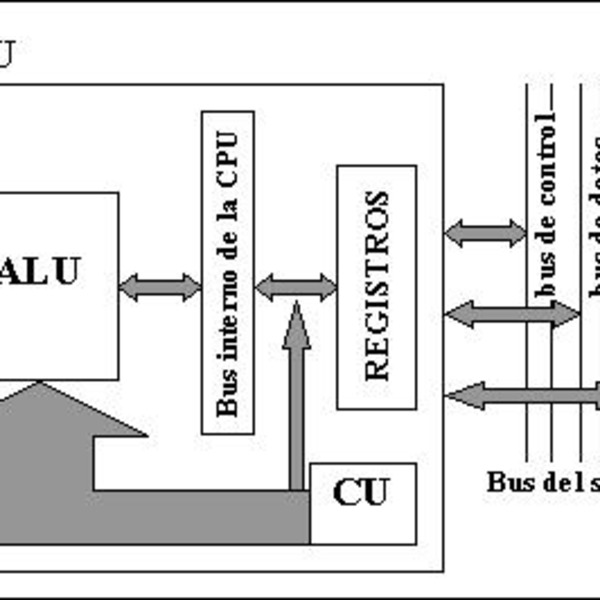
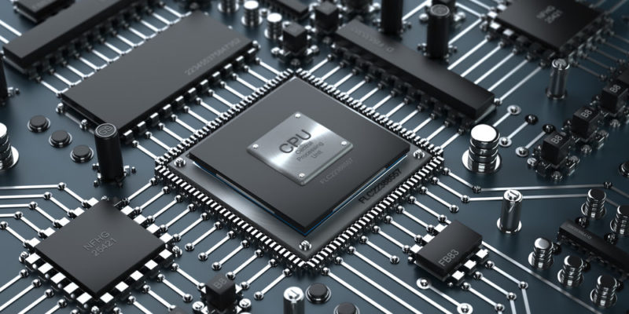
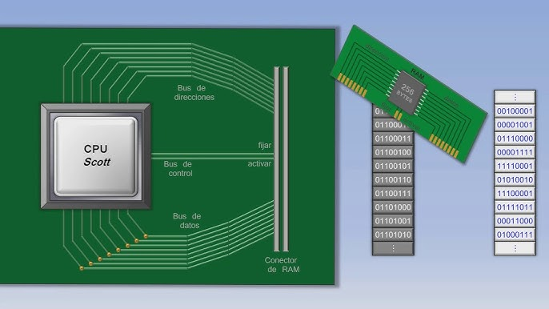
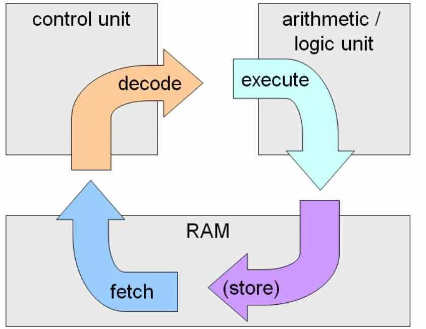
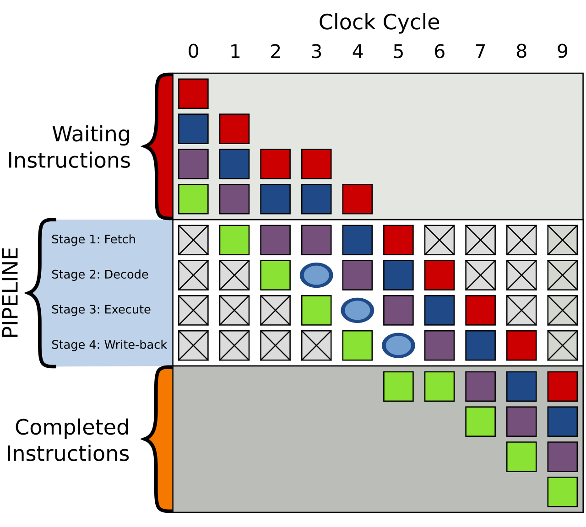
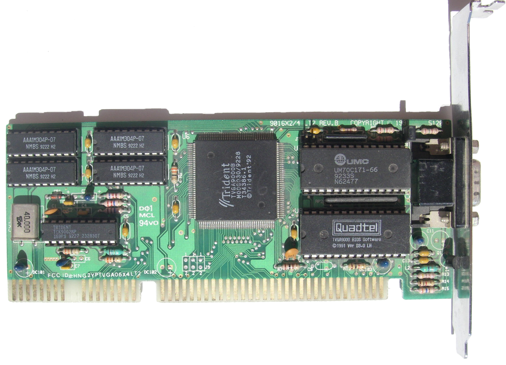

La CPU es el componente encargado de interpretar instrucciones, procesar datos y coordinar el trabajo de los demás elementos del sistema. Comprender su estructura permite explicar cómo una computadora transforma instrucciones de software en operaciones reales de hardware.



La organización del procesador describe la forma en que se conectan y coordinan sus componentes internos para ejecutar instrucciones. Incluye la unidad de control, la unidad aritmético-lógica, los registros internos, los buses y los circuitos que permiten mover datos dentro de la CPU.
Dirige la ejecución de instrucciones y coordina el flujo de datos entre los componentes internos.
Realiza operaciones aritméticas y lógicas, como sumas, comparaciones y operaciones booleanas.
Almacenan temporalmente datos, direcciones, instrucciones y resultados mientras la CPU trabaja.
Transportan información entre la ALU, los registros, la unidad de control y otros elementos del procesador.
Son registros que pueden ser utilizados directa o indirectamente por el programador mediante instrucciones. Guardan datos, direcciones o valores temporales necesarios para ejecutar programas.
Ejemplo: registros de propósito general, acumuladores, registros índice y registros base.
Son registros usados por la CPU para controlar la ejecución del programa y registrar condiciones del sistema. Normalmente no se modifican directamente por el usuario.
Ejemplo: contador de programa, registro de instrucción, registro de estado y apuntador de pila.
Las CPU reales organizan sus registros de acuerdo con su arquitectura. Algunas tienen pocos registros especializados y otras muchos registros de propósito general.
Ejemplo: x86, ARM y MIPS usan diferentes cantidades, nombres y funciones de registros.
El ciclo de instrucción es el proceso repetitivo que realiza la CPU para ejecutar un programa. Primero busca una instrucción en memoria, después la interpreta y finalmente realiza la operación indicada.


La segmentación permite dividir la ejecución de instrucciones en etapas para que varias instrucciones avancen al mismo tiempo, cada una en una fase diferente. Esto mejora el rendimiento porque la CPU aprovecha mejor sus recursos internos.
Idea clave: es similar a una línea de producción: mientras una instrucción se ejecuta, otra se decodifica y otra se busca en memoria.

El conjunto de instrucciones define las operaciones que una CPU puede entender y ejecutar. Incluye instrucciones para mover datos, realizar cálculos, comparar valores, controlar saltos y comunicarse con memoria o dispositivos.
Características: tipos de operaciones, número de operandos, tamaño de instrucciones, formatos y modos de direccionamiento.
El dato aparece directamente dentro de la instrucción. Es rápido porque no requiere buscar el valor en otra dirección.
La instrucción contiene la dirección de memoria donde se encuentra el dato que debe utilizarse.
La instrucción apunta a una dirección que contiene otra dirección donde realmente está el dato.
La dirección se calcula combinando un valor base con un desplazamiento, útil para arreglos, ciclos y estructuras de datos.
El formato de una instrucción indica cómo se distribuyen sus partes: código de operación, operandos, registros, direcciones y bits adicionales de control. Gracias a este formato, la CPU sabe qué operación debe ejecutar y dónde encontrar los datos necesarios.
Informacion sobre el contenido visto en la materia
Carpeta raíz: pdfs
Formato: PDF
Acceso: descarga directa
© Angeline Jaretzi Rojas de la Rosa. Arquitectura de las computadoras.